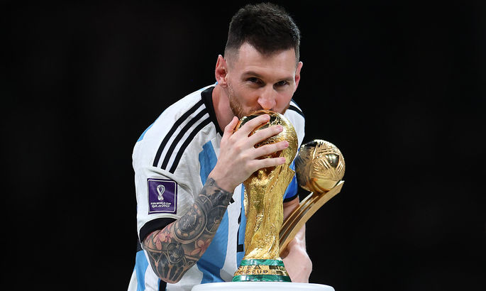

Ліонель Мессі

Ліоне́ль Андре́с Ме́ссі Куччитті́ні (ісп. Lionel Andrés Messi Cuccittini; нар. 24 червня 1987, Росаріо) — аргентинський футболіст, плеймейкер, нападник клубу «Інтер Маямі». Рекордсмен за кількістю забитих м'ячів у складі збірної Аргентини та «Барселони». Чемпіон світу 2022 року. Віце-чемпіон світу 2014 року. Восьмиразовий володар призу «Золотий м'яч» (1-й показник), зокрема: 2009, 2019, 2021 та 2023 роки за версією France Football, 2010, 2011, 2012[3], 2015 роки за версією об'єднаного трофея від France Football та ФІФА. Восьмиразовий володар титулу найкращий футболіст світу за версією ФІФА, зокрема: 2009, 2010, 2011, 2012, 2015, 2019, 2022, 2023 роки. Шестиразовий володар Золотого бутса УЄФА (1-й показник) (2010, 2012, 2013, 2017, 2018, 2019). Другий футболіст світу 2007, 2008, 2013, 2014, 2016 та 2017 років. Мессі деколи називають «новим Марадоною»[4][5] за його технічну гру та високу результативність. Один з найобдарованіших і найталановитіших атакувальних півзахисників сучасності[6]. У 2012 журнал «Time» вніс його до списку «100 найвпливовіших осіб світу»[7]
Дитинство
Ліонель Андрес Мессі народився 24 червня 1987 року в Росаріо, третьою дитиною в сім'ї Хорхе Орасіо Мессі, керівника металургійного заводу, і його дружини Селії Марії Мессі (дівоче прізвище Кучіттіні), яка працювала в майстерні з виготовлення магнітів. По батьковій лінії він італійського та іспанського походження, правнук іммігрантів з північно-центрального регіону Марке на Адріатичному узбережжі Італії та Каталонії, а по материнській лінії він передусім італійського походження[8]. Лео має двох старших братів — Родріго і Матіаса, а також сестру Марію Соль (Maria Sol)[9][10]. Зростаючи в тісно пов'язаній з футболом родині, Лео змалку плекав пристрасть до спорту, постійно граючи зі своїми старшими братами та двоюрідними братами Максиміліано[en] і Емануелем Б'янкукі[en], які потім стали професійними футболістами[11]. У чотири роки він вступив до місцевого клубу Грандолі, де його тренував батько, хоча найпершою на нього, як на гравця вплинула бабуся по матері Селії, яка супроводжувала його на тренування та матчі[12]. Його сильно вразила її смерть, яка сталася незадовго до його одинадцятої річниці. Відтоді, як побожний католик, відзначаючи свої голи, він дивиться і вказує пальцем в небо в пам'ять про бабусю[13]. Мессі змалку вболівав за клуб свого міста Росаріо «Ньюеллс Олд Бойз» і шестирічним вступив до нього. За шість років у «Ньюеллсі» він забив майже 500 голів. Їх називали «Машиною 87-го року», майже непереможну молодіжну команду, названу так за роком народження, яка регулярно розважала глядачів, виконуючи трюки з м'ячем під час перерви в домашніх матчах першої команди[14][15]. Однак його майбутнє як професійного гравця опинилося під загрозою, коли у віці 10 років йому поставили діагноз «дефіцит гормону росту». Медичне страхування батька покривало лише два роки лікування гормоном росту[en], що коштувало понад 1000 доларів на місяць. Керівництво Ньюеллс спочатку погодилося відшкодовувати решту, але пізніше відмовилося від своєї обіцянки[16]. Його розглядали скаути клубу із Буенос-Айреса — «Рівер Плейт», чий плеймейкер Пабло Аймар був його кумиром, але й вони не змогли заплатити за його лікування через аргентинську економічну кризу[17][18]. Роналду став його підлітковим забивним кумиром. Мессі називав його «найкращим форвардом, якого я будь-коли бачив»[19].
Кар'єра в «Парі Сен-Жермен»
-
Сезон 2021—2022
1 липня 2021 року Ліонель став вільним агентом після закінчення контракту з ФК «Барселона»[347]. Представники клубу та Мессі досягли угоди і планували підписати новий контракт, але через фінансові перешкоди цього не зробили[348]. 10 серпня Мессі підписав контракт із французьким клубом ПСЖ терміном на два роки та можливістю продовження ще на рік[349][350].
-
Сезон 2022—2023
31 липня 2022 року «Парі Сен-Жермен» обіграв «Нант» в матчі за Суперкубок Франції 2022 з рахунком 4-0. Перший м'яч за парижан в даній зустрічі забив Ліонель Мессі. Цей трофей став 41-м для Ліонеля Мессі в кар'єрі[351]. 7 серпня 2022 року новий сезон Ліонель розпочав з дубля в ворота «Клермона» в першому турі чемпіонату Франції, в якому «ПСЖ» переміг з рахунком 5-0[352]. 26 лютого 2023 року Ліонель Мессі відзначився голом та двома результативними передачами у виїзному матчі чемпіонату Франції проти марсельського Олімпіка, у якому ПСЖ переміг з рахунком 3-0. Гол аргентинця у цьому матчі став для нього 700-м на клубному рівні (672 — у футболці «Барселони», 28 — за ПСЖ). Для досягнення цієї позначки йому знадобилося 840 матчів.[353][354]
Кар'єра в «Інтер Маямі»
-
Сезон 2023
15 липня 2023 року Ліонеля Мессі офіційно презентовано як футболіста клубу «Інтер Маямі». Аргентинець перейшов до «Інтер Маямі» на правах вільного агента, контракт з клубом розрахований на два сезони, до літа 2025 року[365]. 22 липня 2023 року у Флориді Мессі дебютував за свою нову команду у матчі розіграшу Кубка Ліг, в якому «Інтер Маямі» зустрічався з мексиканським «Крус Асуль». Аргентинець з'явився на полі, вийшовши на заміну на 54-й хвилині. До цього його нова команда 6 матчів поспіль не здобувала перемогу. І саме гол Ліонеля перервав цю чорну смугу. У компенсований час зустрічі зірковий новачок підійшов до м'яча та влучно пробив зі штрафного у своєму стилі, не залишивши голкіперу шансів на порятунок. У результаті його команда перемогла з рахунком 2:1[366]. У цьому матчі Ліонель Мессі відзначився черговим досягненням: аргентинець забив 700-й гол у кар'єрі без урахування пенальті (усього 108 голів з пенальті), у його найближчого переслідувача — це Кріштіану Роналду — 686 голів з гри. При цьому Мессі зіграв на 139 матчів менше за Роналду[367].
-
Сезон 2024
2 березня 2024 року Ліонель Мессі відзначився дублем у матчі 3-го туру МЛС проти «Орландо Сіті». На рахунку аргентинця стало 500 голів у національних чемпіонатах за всю кар'єру, зокрема Мессі забив 474 голи у чемпіонаті Іспанії, 22 — у чемпіонаті Франції та 4 — у МЛС.[381]
Міжнародна кар'єра
-
2004—2005: успіх у молодіжній збірній (до 20 років)
Як людина, що має подвійне аргентино-іспанське громадянство, Мессі мав право вибору, за яку цих країн виступати[382]. Селекціонери збірної Іспанії до 17 років почали переслідувати його 2003 року після того, як футбольний директор Барселони Карлес Решак дав знати Королівській іспанській футбольній федерації про свого молодого гравця. Мессі відхилив це запрошення, бо з дитинства мріяв грати за Ла Альбіселесте. Щоб ще більше відгородити його від Іспанії, Аргентинська футбольна асоціація в червні 2004 року організувала два товариські матчі до 20 років проти Парагваю та Уругваю з метою остаточно закріпити за ним статус гравця збірної Аргентини у ФІФА.
-
2005—2006: дебют в національній збірній і Чемпіонат світу
Виступ футболіста у команді до 20 років привернув увагу головного тренера старшої команди Хосе Пекермана й той викликав Мессі на гру в товариському матчі проти збірної Угорщини, що відбувся 17 серпня 2005 року. У віці 18 років Мессі дебютував за дорослу збірну Аргентини на стадіоні Ференц Пушкаш, вийшовши на заміну 63-й хвилині. Однак, він зіграв лише 40 секунд і відразу ж отримав червону картку за удар суперника ліктем. Вільмош Ванцак схопив Мессі за футболку й той вдарив захисника рукою, намагаючись відштовхнути його, що арбітр трактував як навмисне порушення[386].
-
2007—2008: фінал Копа Америка 2007 та золото Олімпіади
До часу Кубку Америки 2007 у Венесуелі Мессі вже став одним із найкращих гравців у світі, тож забезпечив собі місце у стартовому складі національної збірної, а команду Альфіо Басіле вважали фаворитом цього турніру[62][400]. Мессі провів усі 6 ігор та забив 2 голи. Він діяв у атакувальному ключі, ближче до вістря атаки, де грав Карлос Тевес. У першому матчі його команда перемогла збірну США з рахунком 4-1. Четвертий з цих голів забив Мессі. Потім з пенальті зрівняв рахунок у матчі проти Колумбії, який завершився перемогою Аргентини 4-2[401][402].
-
2008—2011: спад у грі збірної
Від кінця 2008 року збірна пережила трирічний період, який відзначався поганими результатами[400]. Під керівництвом Дієго Марадони, який привів Аргентину до перемоги на чемпіонаті світу як гравець, команда ледве пробилася на Чемпіонат світу 2010, забезпечивши собі місце в турнірі лише після перемоги над Уругваєм 1-0 у своєму останньому матчі відбору. Марадону критикували за його стратегічні рішення, зокрема за гру Мессі не на своїй звичній позиції. У восьми матчах кваліфікації під керівництвом Марадони Мессі забив лише один гол, перший гол у першому з цих матчів, коли його команда перемогла Венесуелу 4:0[390][410].
-
2011—2013: капітанська пов'язка
Після невдалого виступу Аргентини в Кубку Америки Батісту замінив Алехандро Сабелла. Після призначення на посаду в серпні 2011 року Сабелла призначив 24-річного Мессі капітаном. Закритий від природи, Мессі вів уперед команду своїм прикладом найкращого гравця, а Маскерано продовжував виконувати роль лідера на полі та мотиватора[420][421]. Надалі Сабелла звільнив Тевеса і поставив гравців, з якими Мессі виграв молодіжний чемпіонат світу та Олімпійські ігри. Тепер, граючи вільну роль у поліпшеній команді, Мессі перервав свій безгольовий період, забивши в їхньому першому відбірковому матчі чемпіонату світу проти Чилі 7 жовтня свій перший офіційний гол за Аргентину за два з половиною роки[390][420]. 13 жовтня в матчі відбіркового турніру ЧС-2014 Ліонель Мессі відзначився двома голами у воротах збірної Уругваю (рахунок матчу 3-0)[422][423].
-
Чемпіонат світу 2014
На чемпіонаті світу 2014 року в Бразилії Ліонель Мессі був капітаном збірної Аргентини. Напередодні турніру були певні сумніви щодо його форми, оскільки невдалий сезон «Барселони» для самого футболіста позначився травмами. Втім, у перших чотирьох матчах його визнали найкращим гравцем[427]. У дебютному матчі групового етапу Мессі відзначився переможним голом на 65-й хвилині у ворота збірної Боснії і Герцеговини, забивши свій перший з 2006 року гол в рамках фінальних частин чемпіонатів світу[428]. У наступному матчі збірна Аргентини перемогла збірну Ірану з рахунком 1-0, та забезпечила собі таким чином вихід в плей-оф чемпіонату.
-
Копа Америка 2015
На Копа Америка 2015, що проходив у Чилі, збірна Аргентина на чолі з колишнім тренером «Барселони» Тата Мартіно виступала як фаворит зважаючи на статус віцечемпіонів світу[448]. У першому матчі групового турніру аргентинці зіграли внічию 2-2 зі збірною Парагваю, Мессі відзначився голом з пенальті. Це був єдиний гол Ліонеля на турнірі[449]. У матчах проти Уругваю та Ямайки, в яких аргентинці перемогли з однаковим рахунком 1-0, Ліонель результативними діями не відзначався. Матч проти Ямайки був сотим для Ліонеля Мессі у складі національної збірної, і він став лише п'ятим аргентинцем, який подолав позначку в 100 проведених матчів за національну збірну Аргентини[450]. У своїх 100 виступах він забив 46 м'ячів, 22 з яких припали на офіційні змагання[390].
-
2016: Копа Америка Сентенаріо
Турнір присвячений сторіччю проведення Кубка Америки збірна Аргентини розпочала з реваншу проти збірної Чилі, здобувши перемогу з рахунком 2-1[457]. Ліонель Мессі не брав участі в цьому матчі через травму спини, якої зазнав у товариському матчі зі збірною Гондурасу, що відбувся 27 травня 2016 року[458]. У другому матчі проти збірної Панами, не відновившись повністю від травми, Ліонель вийшов на заміну на 61-й хвилині та зумів оформити хет-трик за 28 хвилин, завдяки чому аргентинці перемогли з рахунком 5-0 забезпечивши собі місце у чвертьфіналі[459][460]. В останньому матчі групового турніру Аргентина перемогла Болівію з рахунком 3-0, Ліонель повністю відігравши другий тайм результативними діями не відзначився[461].
-
«Не йди, Лео»
Коли Мессі оголосив, що завершує кар'єру, в Аргентині розпочалася кампанія, щоб Мессі змінив свою думку[473]. В аеропорту Буенос-Айреса Його вітали вболівальники з плакатами на кшталт «Не йди, Лео». Президент Аргентини Маурісіо Макрі закликав Мессі не припиняти виступи за збірну, заявивши: «Нам пощастило, саме це приносить задоволення в житті. Божий дар — мати найкращого гравця світу в такій футбольній країні, як наша… Ліонель Мессі — це найбільше, що ми маємо в Аргентині, і ми повинні дбати про нього»[474].
-
Повернення
Лише через тиждень після того, як Мессі оголосив про завершення міжнародної кар'єри, аргентинська газета Ла Насьйон повідомила, що він розглядає можливість повернутись у збірну, щоб зіграти у відбіркових змаганнях до Чемпіонату світу з футболу 2018 року у вересні[478]. 12 серпня було підтверджено, що Мессі передумав завершувати кар'єру в національній збірній, і його внесли до складу команди на майбутні відбіркові матчі Чемпіонату світу з футболу 2018 року[479]. 1 вересня 2016 року першій грі після повернення Мессі відзначився, а його збірна перемогла у кваліфікаційному матчі Уругвай з рахунком 1:0[480].
-
Чемпіонат світу 2018
Аргентина невдало провела відбірковий турнір. Лише виступ Мессі в останньому матчі дозволив їй потрапити на Чемпіонат світу Чемпіонат світу 2018 року. Тому прогнози на сам турнір були невтішними, тим більше коли в березні 2018 року команда без травмованого Мессі року програла Іспанії 6–1[486][487]. Напередодні першого матчу Аргентини в ЗМІ точилися спекуляції щодо того, чи це буде останній чемпіонат світу для Мессі[488]. 16 червня в першому матчі групового етапу проти збірної Ісландії Мессі не забив потенційно переможний пенальті, й матч завершився 1-1[489]. 21 червня в другій грі Аргентина програла Хорватії 3-0. Після матчу тренер Аргентини Хорхе Сампаолі казав про відсутність якості в грі команди навколо Мессі, «дійсність аргентинської команди затуманює його [Мессі] блиск»[490].
-
2019: Копа Америка
21 травня 2019 року Мессі внесли до остаточного складу команди Лілонеля Скалоні для участі в Кубку Америки[29]. 19 червня в другому матчі групового етапу Аргентина зіграла внічию проти Парагваю 1–1, а Мессі зрівняв рахунок із пенальті[498]. 28 червня на стадіоні Маракана у чвертьфіналі Аргентина перемогла Венесуелу 2:0, а Мессі зазнав критики від ЗМІ за свій виступ. Він прокоментував, що це була не найкращий Кубок Америки, а також критикував низьку якість полів[499]. 2 липня у півфіналі Аргентина зазнала поразки 2–0 від господарів Бразилії, а Мессі піддав критиці суддівство під час матчу[500].
-
2021: Рекордсмен збірної, перемога на Копа Америка, найкращий бомбардир Південної Америки
15 червня 2021 року у першому матчі групового турніру «Копа Америка 2021» аргентинці зіграли внічию зі збірною Чилі з рахунком 1-1, Ліонель Мессі відзначився голом зі штрафного удару[506][507]. У наступних двох матчах групи Аргентина перемогла Уругвай та Парагвай з мінімальним рахунком, у Ліонеля асист проти Уругваю. В останньому матчі групового турніру аргентинці перемогли збірну Болівії з рахунком 4-1, Мессі забив 2 м'ячі та віддав 1 гольову передачу.
-
2022: Фіналіссіма — другий трофей
1 червня 2022 року Ліонель Мессі здобув свій другий трофей у складі національної збірної — «Фіналіссіма 2022». Аргентина перемогла збірну Італії з рахунком 3-0 в третьому розіграші Кубка чемпіонів КОНМЕБОЛ–УЄФА, футбольного матчу між переможцями попередніх чемпіонатів Південної Америки та Європи, що відбувся на стадіоні «Вемблі» в Лондоні[520]. Мессі відзначився двома результативними передачами та був визнаний гравцем матчу[521].
-
Перемога на чемпіонаті світу 2022
22 листопада в першому матчі групового етапу проти Саудівської Аравії, в якому Аргентина програла з рахунком 2-1, Мессі забив гол, реалізувавши пенальті на 10-й хвилині гри[524]. У наступному матчі групи проти збірної Мексики (2-0), що відбувся 26 листопада, Ліонель відкрив рахунок та віддав гольову передачу на Енцо Фернандеса[525]. Мессі став найвіковішим футболістом в історії проведення мундіалей, якому вдалося забити та віддати асист в одному матчі ЧС (35 років 155 днів), цікаво також, що він досі є також наймолодшим гравцем в історії чемпіонату світу, який оформляв гол+пас у одному поєдинку (ЧС-2006, матч з Сербією, 18 років 357 днів)[526]. 30 листопада у вирішальному матчі групового етапу Аргентина перемогла Польщу з рахунком 2-0, Мессі не реалізував пенальті у першому таймі, а також не відзначився результативними діями у цьому матчі[527][528]. Це був 22-й матч Ліонеля Мессі на чемпіонатах світу, і він випередив за цим показником Дієго Марадону (21 матч)[529].
Профіль гравця
-
Стиль гри
Завдяки невисокому зростові Мессі має нижчий центр ваги, ніж вищі гравці, що надає йому більшої спритності й дозволяє швидше змінювати напрямок та уникати гравців суперника[538][539]. Тому іспанські ЗМІ назвали його «La Pulga Atómica» («Атомна блоха»)[540][541][542]. Попри малий зріст, він володіє значною силою у верхній частині тіла. Вкупі з його низьким центром ваги та здатністю утримувати рівновагу, це допомагає йому витримувати тиск дужих супротивників. Отже, за ним неодноразово помічали відсутність симуляції за допомогою пірнання[14][539][543]. Короткі, міцні ноги дозволяють йому робити короткі спурти, а їх спритність дає змогу йому зберігати контроль над м'ячем під час дриблінгу на швидкості[544]. Його колишній тренер у Барселоні Пеп Гвардіола якось заявив: «Мессі — єдиний гравець, який швидше бігає з м'ячем, ніж без нього»[43]. Від середини 2000-х років Мессі поліпшив гру слабшою ногою, але його провідною ногою, як і раніше, є ліва. Зовнішньою стороною лівої стопи він грає, як правило, коли починає дриблінговий пробіг, а внутрішню її частину він використовує для ударів по воротах та передач[en] [545][546].
-
Порівняння з Кріштіану Роналду
Серед сучасних футболістів, Мессі найчастіше порівнюють з португальським нападником Кріштіану Роналду, в рамках суперництва, що триває. У списку спортивних протистоянь воно стоїть поруч із такими суперництвами: Мухаммед Алі — Джо Фрейзер у боксі, Б'єрн Борг — Джон Макінрой у тенісі, і Айртон Сенна — Ален Прост в автоперегонах Формула-1[568][569]. Хоча Мессі часом заперечував будь-яке суперництво[570][571] їх вважають подразниками один для одного, щоб прагнути стати найкращим гравцем у світі[572]: від 2008 року Мессі здобув 7 Золотих м'ячів, тоді як Роналду — 5[573], 6 нагород за найкращого гравця світу FIFA, тоді як Роналду 5, та 6 Золотих бутс, тоді як Роналду — 4[574]. Експерти та вболівальники регулярно обговорюють індивідуальні переваги обох гравців[572][575]. Окрім ігрових стилів, дебати також точаться навколо відмінностей їхньої статури — Роналду — зріст 1,87 м з мускулистою статурою, а також протилежність поведінки перед уболівальниками — впевненість і театральність Роналду як противага до непоказності Мессі[576][577][578]. З 2009–10 по 2017–18 роки щороку Мессі щонайменше двічі стикався з Роналду під час Ель Класіко, що належить до найбільш популярних щорічних спортивних подій у світі[579]. Поза межами поля Роналду є прямим конкурентом Мессі в сенсі заробітку, спонсорства та фан-бази в соціальних мережах[579].
Особисте життя
-
Сім'я та стосунки
Від 2008 року Мессі перебуває у стосунках із Антонелою Роккуццо, уродженкою Росаріо[580]. Він знає Роккуццо з п'яти років, бо вона — двоюрідна сестра його найкращого друга з дитинства Лукаса Скальї[en], також футболіста[581]. Упродовж року Мессі тримав їхні стосунки в таємниці, а розповів про них уперше в інтерв'ю в січні 2009 року. Мессі й Роккуццо мають трьох синів: Тьяго (2012 року народження), Матео (2015 р.н.) і Сіро (2018 р.н.). Щоб відсвяткувати першу вагітність своєї подруги, Мессі поклав м'яч під сорочку, коли 2 червня 2012 року відзначився в матчі проти Еквадору, який збірна Аргентини виграла 4:0. Цю звістку він підтвердив в інтерв'ю через два тижні[582]. Тьяго народився в Барселоні 2 листопада 2012 року, а Мессі був присутній під час народження, отримавши від Барселони дозвіл пропустити тренування. На своїй сторінці у Facebook він так написав про появу сина: «Сьогодні я найщасливіша людина у світі, в мене народився син, дякую Богові за цей дар!»[583][584]. Ім'я Тьяго та відбитки рук витатуювані на його лівій литці[585]. У квітні 2015 року Мессі підтвердив у Facebook, що вони очікують на другу дитину[586]. Він пропустив тренування перед матчем проти «Атлетико Мадрид», щоб відвідати народження свого другого сина Матео 11 вересня 2015 року в Барселоні[426]. 30 червня 2017 року він одружився з Роккуццо в розкішному готелі під назвою Hotel City Center в Росаріо. Його весілля відвідало близько 260 гостей[587]. 15 жовтня 2017 року його дружина оголосила, що очікує на третю дитину, розмістивши допис в Instagram: «Сім'я з п'ятьох»[588][589]. 10 березня 2018 року Мессі пропустив матч проти Малаги після народження Сіро[590].
-
Проблеми із законом
Фінансові справи Мессі потрапили під слідство у 2013 році за підозрою в ухиленні від сплати податків. Офшорні компанії в податкових гаванях Уругвай та Беліз слугували для ухилення від сплати 4,1 млн євро податків, пов'язаних із спонсорським доходом між 2007 та 2009 роками. Завдяки Панамським документам стало відомо, що Мессі належить unrelated shell company, створена 2012 року в Панамі. Мессі заявив, що нічого не знав про підозрілу схему, і у серпні 2013 року добровільно сплатив заборгованість у розмірі 5,1 млн євро. 6 липня 2016 року Мессі та його батька визнано винними у податкових шахрайствах та винесено вирок у вигляді умовного ув'язнення строком на 21-місяць і наказано сплатити штраф у розмірі відповідно 1,7 та 1,4 млн євро[602]. Перед обличчям судді він сказав: «Я просто грав у футбол. Я підписував договори, тому що довіряв моєму татові та адвокатам, і ми вирішили, що вони візьмуть на себе відповідальність за ці речі»[603].